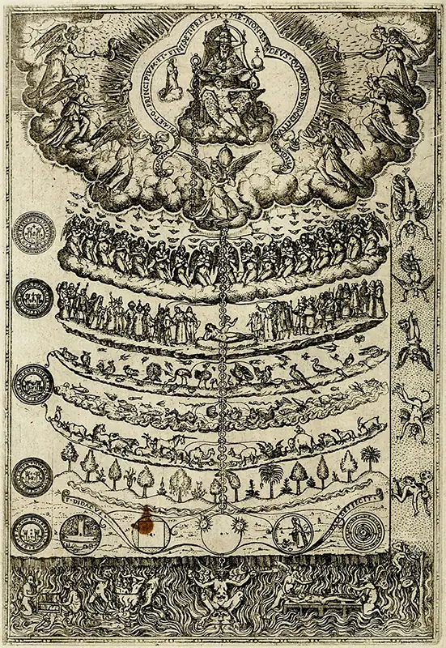
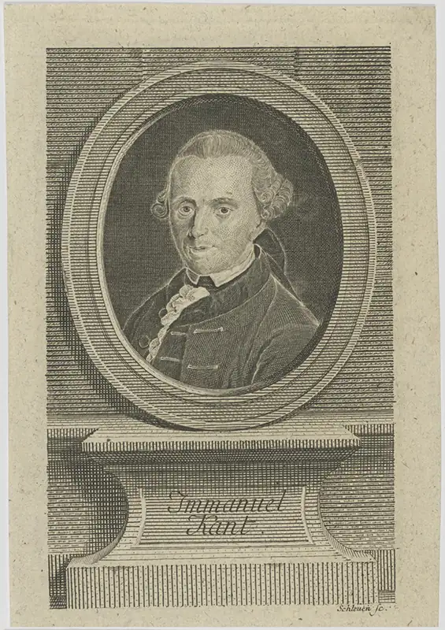
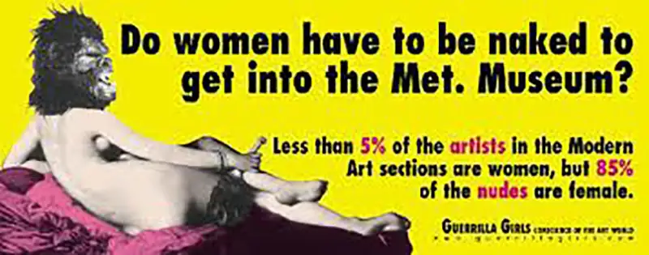

Chapter 8: Value Theory¶
Introduction¶
Chances are you have found yourself in a debate with someone about a matter involving judgments about what is good or bad. Maybe your disagreement was about a contemporary moral issue like abortion or the death penalty. Maybe the conflict had to do with a course of action, like going to college or joining the military, and whether it was the right thing to do. Maybe you got into a disagreement about whether a work of art was beautiful or a movie was good or bad. These types of conversations deal with values, and there is a specific area of philosophy that helps people think about these types of debates: value theory.
Value theory is the philosophical investigation of values. In its narrow sense, it refers to ethical concerns. In its broader sense, it addresses ethical, social, political, religious, aesthetic, and other types of values. Philosophers use value theory to approach questions that require people to think about what they value in life as individuals and as communities, especially in terms of morality, happiness, goodness, and beauty. Value theory provides tools that you can use to navigate difficult debates about what you value and why. This chapter will help you understand what a value is and how it differs from facts, the types of questions and distinctions that help people discuss values and their relations, and specific areas of value theory like metaethics and aesthetics.
8.1 The Fact-Value Distinction¶
Learning Objectives
By the end of this section, you will be able to:
- Articulate the fact-value distinction.
- Distinguish between descriptive and evaluative claims.
- Explain the is-ought problem
- Describe the naturalistic fallacy
- Evaluate objections to the fact-value distinction.
Values are woven into how you live and relate to others. The ideals that guide your life decisions, the morals that shape how you treat others, and even the choices that define your personal aesthetic all express your values. Values signify judgments about the way people ought to think, feel, or act based on what is good, worthwhile, or important. For example, you might think you ought to read Ralph Ellison’s Invisible Man because it is considered a great American novel or because you believe that reading about anti-Black racism in the United States is important for forming a more just worldview. Here, your reasoning for a course of action—reading Invisible Man—is based on value judgments about the novel’s greatness and the importance of understanding racial injustice.
Values describe how people think things should be, not necessarily how they are. Philosophers describe this difference as the is-ought distinction or, more commonly, the fact-value distinction. The fact-value distinction distinguishes between what is the case (facts) and what people think ought to be the case (values) based on beliefs about what is good, beautiful, important, etc.
The line between facts and values is not always clear. It can be easy to mistake a value for a fact, especially when a person feels strongly about something and believes it is truly good or bad beyond any doubt. For example, the statement “killing an innocent person is bad” may seem like a fact, but it is not a description of how things are. This statement describes the way people think things should be, not the way the world is. For this reason, the fact-value distinction is an important place to begin. This section will give an overview of the fact-value distinction by examining the types of claims you can make about facts and values and how facts and values are related to or distinct from each other.
Descriptive vs. Evaluative Claims¶
One way to think about the difference between facts and values is through the different types of claims you can make about them. People talk about facts using descriptive claims and values using evaluative claims. Descriptive claims are statements about matters of fact, whereas evaluative claims express a judgment about something’s value.
Descriptive Claims: How the World Is¶
Descriptive claims make statements about how the world is. They describe the facts of something, what you observe to be the case without any form of evaluation or judgment. For example, “the weather today is sunny” is a descriptive claim because it simply describes what someone observes.
Evaluative Claims: How the World Ought to Be¶
Evaluative claims make statements about how the world ought to be. They express judgments of value: what is good, just, fair, beautiful, healthy, important, etc. Instead of simply describing, evaluative claims interpret facts or assert what should be the case.
Evaluative claims can be prescriptive—that is, they state what should be the case or what people ought to do in a given situation. For example, “I should go outside to get some sunshine” is an evaluative claim. It is based on a descriptive claim (“the weather today is sunny”), but it interprets this fact and ascribes a value to it (“sunshine is good for mental health”) in a way that prescribes an action (“I should go outside”). When people make evaluations about the goodness of something, it implies that they should do it. Evaluations are thus connected to actions and choices.
Sometimes people struggle to distinguish between facts and values and mistakenly think an evaluative statement is simply a positive claim about the way things are. As the next section will describe, this mistake is a type of fallacy.
Think Like a Philosopher
Determine whether the statements below are evaluative or descriptive. Propose a descriptive statement and a value statement that form the basis of each statement that you identify as evaluative.
- You should wear a scarf and mittens to keep warm.
- People visit Athens to explore the remains of the ancient city.
- Tomatoes contain vitamin C, which can boost your immune system.
- The city needs to build more parks where residents can walk, jog, and exercise.
The Naturalistic Fallacy¶
When thinking about values, it can be easy to make errors. A fallacy is an error in logical reasoning. Fallacies involve drawing the wrong conclusions from the premises of an argument or jumping to a conclusion without sufficient evidence. There are many types of logical fallacies because there are many ways people can make mistakes with their reasoning.
Connections
Learn more about informal fallacies in the chapter on logic and reasoning, and explore more about cognitive values in the chapter on critical thinking, research, reading, and writing.
The naturalistic fallacy is an error in reasoning that assumes you can derive values (what people ought to do) from facts about the world (what is the case). The British philosopher G. E. Moore (1873–1958) explains the problem with this fallacy in his 1903 book Principia Ethica. For Moore, if philosophers based the judgment “x is good” on a set of facts, or natural properties, about x, they have committed the naturalistic fallacy.
There are frequent examples of the naturalistic fallacy in popular discourse. Debates about whether monogamy is good or bad are frequently posed in terms of whether it is “natural,” and proponents for either side of the argument often point at monogamous or nonmonogamous animals to justify their answer. Claiming what humans ought to do from observations about animal behavior is an attempt to derive values from facts about the world.
Hume and the Is-Ought Problem¶
The naturalistic fallacy is related to the is-ought problem. This problem asserts the challenge of moving from statements of fact (something is) to statements of value (something ought to be). The Scottish Enlightenment philosopher David Hume (1711–1776) provides one of the most famous explanations of this problem in his A Treatise of Human Nature (1739–1740).
At the time Hume was writing the Treatise, philosophers were rejecting a morality based on religious faith or dogmatic beliefs and were instead trying to find justifications for morality that relied on undeniable reasons for being a good person or trying to build a better society. Hume countered that you cannot derive ought from is because morality has to do with sentiments, not facts. In other words, morality has to do with what people believe and how we feel, and beliefs and feelings are not factual or derivable from facts. As Hume explains in the passage below, facts have to do with relations between objects. Morality, however, has to do with a human subject expressing their sentiments about a matter.
Read Like a Philosopher
Read this excerpt from David Hume’s A Treatise of Human Nature, Book 3, Part 1. As you read, pay attention to how he describes propositions that use “ought.” Does he seem to think they are justified with proper reasoning? Why or why not? Think of an example where using “ought” statements without rational justification could be a problem.
““I cannot forbear adding to these reasonings an observation, which may, perhaps, be found of some importance. In every system of morality, which I have hitherto met with, I have always remarked, that the author proceeds for some time in the ordinary way of reasoning, and establishes the being of a God, or makes observations concerning human affairs; when of a sudden I am surprized to find, that instead of the usual copulations of propositions, is, and is not, I meet with no proposition that is not connected with an ought, or an ought not. This change is imperceptible; but is, however, of the last consequence. For as this ought, or ought not, expresses some new relation or affirmation, it is necessary that it should be observed and explained; and at the same time that a reason should be given, for what seems altogether inconceivable, how this new relation can be a deduction from others, which are entirely different from it. But as authors do not commonly use this precaution, I shall presume to recommend it to the readers; and am persuaded, that this small attention would subvert all the vulgar systems of morality, and let us see, that the distinction of vice and virtue is not founded merely on the relations of objects, nor is perceived by reason.””
(Source: Hume, David. (1739–1740) 2002. A Treatise of Human Nature, Book III, Part I, Section I. Project Gutenberg. https://www.gutenberg.org/files/4705/4705-h/4705-h.htm - link2H_4_0085)
The Open-Question Argument¶
Hume’s description of the is-ought problem lives on in contemporary philosophy, especially in 20th-century ethics. In his 1903 book Principia Ethica, G. E. Moore introduces the open-question argument to argue against the naturalistic fallacy, which he sees as trying to derive non-natural properties, such as “right” and “good,” from natural properties. Unlike claims in the natural sciences, which extend understanding of or express a discovery about natural properties of the world, goodness and rightness are non-natural properties that cannot establish their truth based on natural properties and thus are always open to questioning. For example, the natural properties of water (H20) are not open to questioning in the same way that the non-natural properties of things that people judge to be “good” or “right” are.
In order to answer the question “Is x good?” people frequently have to assert that something else is good. Is being kind to your neighbor good? Yes. Why? Because compassion for others is good. This does not “close” the question because it amounts to saying “good is good.” It is circular and thus uninformative, so the question remains open. Moore did believe that claims about moral properties can be true, but not in the same way as claims about natural properties.
Read Like a Philosopher
Search social media platforms for examples of “is” presented as “ought” statements. What types of beliefs do you notice people presenting as facts? What types of justifications are given for these claims?
Objections to the Fact-Value Distinction¶
Not all philosophers agree that there is a strict distinction between facts and values. Moral realists argue for a more objective concept of morality. They feel that there are certain moral facts about the world that are objectively true, such as the claim “murder is immoral.” Moral skeptics, on the other hand, often use the fact-value distinction to argue against an objective basis for morality by emphasizing that moral values are not factual and involve a different mode of thinking that is distinct from logical or scientific reasoning. Disagreements with the fact-value distinction come in different forms.
Putnam’s Objection to the Fact-Value Distinction¶
Some philosophers reject the concept of empirical facts by demonstrating that scientific reasoning uses values to establish facts. In his 1982 article “Beyond the Fact-Value Dichotomy,” American philosopher and mathematician Hilary Putnam (1926 – 2016) argues that scientists frequently must choose between conflicting theories and use desirable principles like simplicity or coherence to devise an explanation for complex observational data. To illustrate his point, he explains that Einstein’s theory of gravity was accepted over competing theories because it was simpler and preserved other laws of physics. Putnam argues that science’s creation of facts is an evaluative practice and does not necessarily stand on a firmer ground than conclusions about values like goodness or kindness. This approach to refuting the fact-value distinction is provocative because it challenges the idea that science is an objective presentation of facts.
Lack of Distinction Claims¶
Another approach to challenging the fact-value distinction is to emphasize how people connect them in their everyday ways of speaking. Some philosophers argue that certain types of descriptive claims imply an evaluative claim, especially if they are linked by the concept of purpose or function. For example, if a person says, “This knife is too dull to cut anything,” then you can assume they also mean “This is a bad knife” because it does not fulfill its function. If you understand the purpose of function of the knife, you can follow this implication easily. Since people make these types of connections easily in everyday speech, the distinction between facts and values may not hold much meaning.
Claims of Objective Moral Reasoning¶
Finally, some philosophers reject the fact-value distinction through the concept of telos (purpose, end, or goal). They argue that values are based on the fulfillment of a goal. You can objectively assess whether an action does or does not fulfill a goal. For example, if your goal is to help others in need, an action will be good if it fulfills that goal, like volunteering at a homeless shelter. Using this goal, you can objectively determine whether any action is good, bad, or neutral. Telos, therefore, establishes an objective morality.
To investigate the is-ought distinction further, you must explore what a value is. The following section will take up this question.
8.2 Basic Questions about Values¶
Learning Objectives
By the end of this section, you will be able to:
- Relate extrinsic values to intrinsic values.
- Distinguish between monism and pluralism in value theory.
- Explain the concept of incommensurability in value theory.
- Compare and contrast moral pluralism and moral relativism.
People spend much of their time trying to accomplish goals that they deem as “good.” But what do people mean when they say something is “good”? What does it mean to value something? Can conflicting values be resolved? This section will explore different answers to these questions and, in doing so, help you understand the meaning of value.
Intrinsic and Extrinsic Value¶
One way to think about what a value is has to do with whether it is valuable for its own sake or valuable for the sake of something else. Something has intrinsic value if it is valuable for its own sake. For example, Aristotle asserted that happiness has intrinsic value because it is an end in itself. He believed that all actions ultimately aim at happiness, but happiness is pursued for its own sake. If someone were to ask, “What is happiness good for?” Aristotle would reply that it simply good in and of itself.
Something has extrinsic value if it is valuable for the sake of something else. It is a means to an end. For example, you probably engage in a variety of activities that are good insofar as they help your health. Eating a well-balanced diet, going to the doctor regularly, and keeping an active routine all contribute to health and well-being. Health is thus the intrinsic good that makes each of those activities extrinsically good.
Fundamentality¶
One could argue, however, that health is yet an extrinsic value because people only value health because it contributes to happiness. When people distinguish between intrinsic and extrinsic values, they think about not only what is valuable but also how values are related to each other. The example of health and happiness raises the question of fundamentality—whether there is only one intrinsic value or many.
Monism argues that there is only one fundamental intrinsic value that forms the foundation for all other values. For example, hedonists think that pleasure is a fundamental intrinsic value and that something must be pleasurable to be good. A monist believes that if people evaluate their values carefully—and the relationship between their values—then one value will be more important than the others and the others will serve that intrinsic value. For a monist, it is important to identify which value is more fundamental so that it can guide your beliefs, judgments, and actions.
Pluralism argues that there are multiple fundamental intrinsic values rather than one. A pluralist can still evaluate which values are intrinsic and which are extrinsic, but that process does not lead them to identify one ultimate intrinsic value that forms the foundation for all other values. Pluralism holds that people have two or more fundamental values because these values are not reducible to each other. For example, knowledge and love are both intrinsic goods if what is good about knowledge cannot be summed up in terms of love and if what is good about love cannot be summed up in terms of knowledge.
Philosophers who argue for monism often see pluralism as a type of relativism that can prevent people from resolving moral issues when values come into conflict. Consider physician-assisted suicide. A monist would want to address the issue of ending one’s life for medical reasons by evaluating it according to one ethical principle. For example, if monists hold that pleasure is the intrinsic good, they might argue that physician-assisted suicide is good when it allows the cessation of pain, particularly in cases where the patient’s suffering prohibits any pleasure of mind or body. Pluralists, however, would have to evaluate this physician-assisted suicide based on multiple intrinsic values, such as pleasure and life. In this case, the cessation of pain and the continuation of life are both good, and neither is better than the other. As a result, pluralists may not find a way to resolve the conflicting values or may not be able to identify whether this action is right or wrong. By contrast, monism allows someone to hold a unified and coherent metaethical framework (see the following section on Metaethics) because it asserts one fundamental value rather than many.
Pluralists, however, consider life to have many intrinsic goods including satisfying one’s desires, achieving one’s aims, developing one’s abilities, and developing deep personal relationships. In Women and Human Development, American feminist and moral philosopher Martha Nussbaum (1947 - present) describes many intrinsic goods—including life, health, emotional attachment, affiliation, play, reason, and more (2000). A flourishing life will have many goods, not just one. Pluralists, moreover, are concerned with the consequences of monism. Asserting that there is only one intrinsic good, despite differences in opinion, could potentially restrict individual’s freedom, especially when their values differ from the mainstream.
Incommensurability¶
Pluralism frequently relies on the concept of incommensurability, which describes a situation in which two or more goods, values, or phenomena have no standard of evaluation that applies to them all. You can compare the size of one object in feet and another object in centimeters by converting feet to centimeters. But you cannot compare the speed of a running cheetah to the size of the Taj Mahal because one involves measuring miles per hour and the other involves measuring square feet.
Similarly, some values are simply too different to be evaluated in the same way. For example, there are some things in life that you cherish and cannot describe in terms of a dollar amount, such as love or friendship. The value of friendship is not commensurate with the value of money. Furthermore, physical health and supportive friends are both valuable, but they are good in different ways, so they are incomparable values. Even if you can evaluate values in the same way, you might not be able to compare them in the sense of judging what is better or worse than the other. For example, you might have many friendships that you value highly but not be able to rank them or determine who your best friend is.
Moral Pluralism vs. Moral Relativism¶
Moral pluralism argues that there are different moral frameworks that cannot be unified into one. One implication of this is that one culture may have difficulty understanding the values of another culture because they have completely different concepts of what is good, and we might not be able to find a way to reconcile these differences. Cultural differences play an important role in value pluralism and the idea that there can be multiple frameworks for understanding morality.
At the same time, pluralism is not the same as relativism. Moral relativism makes a larger claim than pluralism because it not only asserts that there are multiple moral frameworks, it also asserts that each framework is equally valid insofar as individuals, communities, and cultures determine what is moral. Moral relativism thus prohibits cultures from judging each other’s value systems.
Nussbaum uses the example of genital mutilation as an example of why moral relativism raises issues (1999). If morality is completely relative to a culture’s own traditions and values, it would be impossible for any outsiders to condemn female genital mutilation or other practices that harm women or keep them in a weakened or exploited state. Nussbaum argues that feminist issues should not be evaluated by local traditions and that a global notion of justice is needed to address gender inequality. She thus argues for a universal account of justice that is sensitive to differences between cultures, which she calls reasonable pluralism.
Pluralism and relativism get at the heart of many real-world ethical issues that people navigate in life, especially when they look at moral beliefs from historical or cultural perspectives that show how different values can be. Situating different values in relation to each other is difficult, and how people do so has practical outcomes for how they define what is right or wrong, which actions they consider ethical or unethical, and what aims they pursue in life.
8.3 Metaethics¶
Learning Objectives
By the end of this section, you will be able to:
- Identify the meaning of the phrase “ontology of value.”
- Identify the significance of realism and anti-realism for moral discourse.
- Compare and contrast different theories regarding the foundations for moral theory.
- Explain the importance of the Euthyphro problem for metaethics.
Ethics is the broad study of morality and is often divided into metaethics, normative ethics, and applied ethics. Normative ethics and applied ethics are covered in separate chapters. Each field is distinguished by a different level of inquiry and analysis. Metaethics focuses on moral reasoning and foundational questions that explore the assumptions related to moral beliefs and practice. It attempts to understand the presuppositions connected to morality and moral deliberation. Metaethics explores, for example, where moral values originate, what it means to say something is right or good, whether there are any objective moral facts, whether morality is (culturally) relative, and whether there is a psychological basis for moral practices and value judgements.
In the previous two sections, in asking whether there is a fact-value distinction and what values are, we encountered a central question in metaethics—whether morality is grounded in objective or subjective values. We have also encountered questions about what is good or bad and right or wrong, which is the main concern of normative ethics. This section dives deeper into these questions and explores different foundations for moral values, such as God, religious faith, nature, society, politics, law, and rationality.
Ontology of value¶
An important area of metaethics is the ontology of value. Ontology is the study (ology) of being (ōn). It gets at the nature of what makes something what it is. Ontology of value is the study of the being of values. What is a value? Is it a statement about reality? A subjective idea or belief? A mental state or emotion? As you will see, there are different ontological accounts of value.
Realism and Anti-realism¶
Do moral values have a basis in reality, or are they purely subjective and relative to individuals or communities? Depending on your answer, your approach to ethics will look completely different. Thus, the first major distinction between different types of ethical reasoning is the difference between realism and anti-realism. Moral realists, as discussed earlier, object to the fact-value distinction. Realism asserts that ethical values have some basis in reality and that reasoning about ethical matters requires an objective framework or foundation to discover what is truly good. For a realist, values are not simply subjective opinions. Anti-realism asserts that ethical values are not based on objective facts about the world but instead rely on subjective foundations like individuals’ desires and beliefs.
Think Like a Philosopher
Are you a moral realist or anti-realist? Before answering this question, consider the list of actions below. For each, consider both whether you think the action is objectively wrong and why or why not you take this position. Both your responses and your reasons for your responses will help you to determine which category you fall into,
- Murder
- Lying
- Corporal punishment
- Harming an innocent person
This section extends moral realism beyond the fact-value distinction to examine why many argue that moral realism is an important position to take and the types of objective realities people have used to establish a moral reality.
The Importance of Debate within Moral Realism¶
Moral debate poses a challenge to moral realism because it makes morality seem subjective. If people disagree on important moral issues, such as abortion, or on how to justify moral beliefs, how are we to determine who is right? Maybe no one has the right answer and moral claims are simply subjective opinions.
For a realist, moral disagreements do not mean that morality is subjective. Many fields, including the natural sciences, have vibrant debates and disagreements that do not necessarily indicate that their claims are subjective. For example, astronomers used to think that the sun and planets revolved around Earth, and the heliocentric concept of the universe was considered heretical. This disagreement does not mean that astronomy is subjective but instead that astronomy requires ongoing observation and debate to improve its understanding of reality. Along similar lines, moral debates do not necessarily prove morality is subjective and in fact can even improve one’s understanding of a moral issue. Moral realism asserts that morality has an objective framework or foundation, which means that you can make true moral claims. People do not necessarily, however, agree on which claims are true.
The Importance of Moral Resolution¶
Moral relativism, discussed earlier, is an anti-realist position because it denies that there is an objective or universal justification for moral beliefs. Instead, morality is always relative to an individual or community. This means there is no way to say what is truly good or bad.
Moral relativism has taken many different shapes throughout the history of philosophy, and it is debated in popular discourses—especially politics and religion—as well as in metaethics. It is controversial because it seems to undermine the possibility of finding common ground in ethical debates that shape practical action or political policies. Thus anti-realism and moral relativism seem to create insurmountable barriers for overcoming moral disagreements.
For contemporary philosopher Michelle Moody-Adams, however, moral disagreements between different cultures—and even within cultures—do not require us to adopt an anti-realist position. She takes moral disagreements seriously but also argues for “cautious optimism” about moral objectivity (1997). For Moody-Adams, irresolvable moral disagreements are an “unavoidable feature of moral experience” and not a reason to be skeptical about moral reasoning (1997, 107).
Since anti-realism is a form of moral skepticism, it can lead not only to relativism but also to pessimism about whether we can resolve moral debates or whether moral reasoning has any legitimacy. Being able to explain what is right or wrong is important not only for ethics but also for the lives of individuals within communities because people’s actions and decisions impact each other. This is one of the critiques that moral realists employ against anti-realists. If morality is purely subjective, then values are arbitrary and people are unable to make true claims about moral values.
Moral realism requires one to find objective justifications for moral beliefs and claims. These justifications take a variety of forms—including God and nature—which the following sections will explain.
Divine and Religious Foundations for Moral Values¶
One way to analyze moral reasoning is by examining its foundation—that is, how it supports claims about morality. Throughout history, many humans have relied upon a concept of the divine to justify moral claims and values.
Ethical frameworks that are based on God can function in a variety of ways depending on the concept of the divine. God can function as the highest good. In this case, God provides an exemplar for the virtues and values that should guide human action. For example, if God is a loving being, humans should develop their ability to love, and performing loving actions will be the basis for morality. The concept of God can function as an ultimate judge who decides what is right and wrong from an omnipotent and infallible position. In this case, God provides an objective standpoint for moral judgment. With this ethical framework, humans may disagree on what is right or wrong because of their limited perspectives, but morality is not relative or arbitrary because it rests on eternal truths from an all-knowing God.

Religions frequently claim knowledge about the nature and source of reality, the meaning of human existence, the foundations for morality, the purpose of suffering in the world, and what happens when people die. Many religions consider the tenets of their faith to come from a divine source, sacred revelations, or prophets. Religions also look to scripture, sacred practices and customs, images, and objects to determine moral values.
Augustine on Faith and Knowledge¶
Those who challenge the divine as a source of moral authority question whether these moral beliefs are based on only faith or whether they are justified true beliefs that can be accepted as knowledge. Faith refers to beliefs that are not proven, including beliefs that cannot be proven. The medieval monk, theologian, and philosopher Augustine of Hippo (354–430) argued that there are many things in life people claim to know that are actually based on faith. His argument attempts to blur the distinction between faith and knowledge. For example, if people are not adopted, they typically claim to know who their parents are and take that as firm knowledge, not belief. Yet people are not able to remember their own births or the earliest years of their lives, so they did not confirm this belief with their own observations. For Augustine, this is how faith works. In this sense, faith and knowledge serve a similar purpose in human life and the values people hold.
The Euthyphro problem¶
Using God as the basis for moral values can introduce challenging philosophical questions that are difficult to answer. The Euthyphro problem describes such a challenge in theistic ethical systems. It asks whether something is good because God commands it or if God commands it because it is good. The name comes from the Platonic dialogue Euthyphro, which features a conversation between the philosopher Socrates and a man named Euthyphro who claims to be an expert on piety. Socrates asks, “Is the pious being loved by the gods because it is pious, or is it pious because it is being loved by the gods?” (Plato, Euthyphro 10a). In the former case, the gods do not determine what is good, so there must be a higher authority above the gods. In the latter case, the gods remain the ultimate authority, but there are no discernible principles for why they love what they love. That means that piety is a command from above without reason, which limits one’s ability to theorize about it. This idea is called divine command theory.
The former case, however, introduces a problem regarding God’s sovereignty and omnipotence because it places moral principles above the divine and seems to set up a situation in which there are rules not even God may violate. In other words, if God cannot act immorally, is God truly all-powerful?
Natural and Human Foundations for Moral Values¶
Different ethical frameworks rest on different foundations or justifications: some appeal to a nonhuman principle like nature; others appeal to shared human institutions like culture, tradition, society, or law; and still others appeal to the individual and their resources for moral reasoning. This section examines moral reasoning based on nature, society, politics, the self, or reason.
Nature and Natural Law¶
One approach to ethics appeals to nature or natural law to make claims about what is good or bad. An action, goal, or characteristic is good if it accords with nature or natural law and is bad if it violates it. Here, nature can refer to human nature or the observed features of the natural world.
According to the medieval philosopher Thomas Aquinas (1225–1274), there are four types of laws: eternal, natural, human, and divine. Eternal laws govern the universe, natural laws govern the natural world, and human laws govern human societies. Divine laws are supernatural and allow humans to reach salvation but cannot be known through human reason alone. Instead, they must be revealed by God (e.g., the Ten Commandments, Scriptures, and other divine revelations). Humans can use reason, however, to discover natural laws and create human laws. For Aquinas, human laws must align with natural law. Human laws that violate the laws of nature are “no longer a law but a perversion of law” (Aquinas [1485] 1948, 649). Aquinas’s argument contributes to classical natural law theory, which sees laws as upholding natural order. Because nature is not subjective, natural law theory sees values as objective.
Ethical Naturalism¶
As discussed earlier, some philosophers believe that an essential link between values and telos, or purpose, creates an objective moral reality. Ethical naturalism argues that performing good actions fulfills human nature, while performing evil actions distorts it. If this is the case, moral values and “what is good” are based on natural facts about the world, not individuals’ subjective feelings or beliefs. Ethical naturalism often relies on concepts of pleasure, desire, happiness, or flourishing to define what is naturally good or bad.
The 20th-century philosopher Philippa Foot (1920–2010) provides one of the most famous philosophical arguments for ethical naturalism. In Natural Goodness (2003), Foot argues that moral values like “goodness” are not about statements, as G. E. Moore suggested in Principia Ethica, or about mere emotions that individuals feel, but are instead about human flourishing. Just as bees have qualities that help them thrive and build strong colonies, so humans have virtues that help them to thrive in life and build flourishing communities. Foot’s description of flourishing is influenced by Aristotle, who based his concept of ethics on an examination of different virtues, which involve fulfilling one’s telos, or purpose. This approach to morality is called virtue ethics. In ethical naturalism and virtue ethics, discovering moral values requires understanding one’s nature, which must be based on an objective understanding of human life.
Connections
The chapter on normative moral theory explores virtue ethics in greater depth.
In Natural Goodness, Foot further argues that moral evaluations are similar to the types of evaluations that people make about other living things in the natural world. Moral goodness describes how one should live according to human nature. Just as you can know what is good for an animal by studying its nature, you can know what is good for humans by understanding their nature.
More importantly, Foot argues that part of understanding what an organism is involves knowing what is good for it based on its vital processes. For example, you know what is good for a duck based on knowledge of what a duck is. This knowledge would include an understanding of the duck’s nature and what helps it live a good life. A duck is an aquatic bird, so a habitat with water will be good for it. Along similar lines, you can know what is good for a human based on knowledge of human nature.
In this sense, she connects morality to biological flourishing, or achieving the goals of human life. For example, if the purpose of human life is to develop meaningful relationships and to actualize one’s potential, then morality is based on the virtues that allow someone to achieve these ends. For example, one could argue that humans, like other primates, have evolved to cooperate and care for others as a part of their survival, so actions that promote cooperation and care are good, and actions that harm others are bad.
Reason¶
Some ethical theories focus exclusively on certain human capacities, like reason. Reason is a methodical way of thinking that uses evidence and logic to draw conclusions. The use of reason as the grounds for morality became particularly important in Enlightenment philosophy because philosophers wanted to assert the validity of moral principles without relying on religious beliefs or God.

The Enlightenment philosopher Immanuel Kant (1724–1804) argued that as rational agents, humans express general principles or maxims when they act. You always act for a reason—namely, a goal or end in mind. For Kant, an action or decision is moral if you can universalize it, which he formulates in the categorical imperative. Kant’s categorical imperative states: “Act only according to that maxim whereby you can, at the same time, will that it should become a universal law” (Kant [1785] 1998, 31). That means you know an action is moral if can be universal for everyone. The categorical imperative works best when we note that an action contradicts it. For example, lying cannot be moral because it is not universalizable. It is impossible for everyone to lie. Even the act of lying assumes that people usually tell the truth.
Self¶
Other approaches to ethical theory argue that morality originates in the self. How do people know what is right or wrong? What motivates them to be good and care for others? Some argue that the conscience, an individual’s inner sense of right and wrong, forms the basis for ethics. But where does one get this inner sense? Some argue that it comes through intuition—cognition that seems completely self-evident and impossible to deny—while others assert that individuals develop it through education or reason.
Other approaches to ethics rely upon the individual’s psychology, moral sentiments, or feelings. Multiple moral theories emphasize compassion and empathy, the ability to suffer with and share others’ feelings. For the ancient Chinese philosopher Mencius (371–289 BCE), the feeling of compassion allows benevolent actions, which are the basis for ethics and well-being. Compassion and empathy might also be considered virtues that individuals cultivate. Virtue ethics bases its moral theory on virtues as personal characteristics that an individual can develop.
Feminist care ethics bases ethics on individuals’ feelings for the people who play a significant role in their lives. In her book Caring: A Feminine Approach to Ethics and Moral Education, the American philosopher Nel Noddings (b. 1929) argues that an “ethics built on caring” is “characteristically and essentially feminine” insofar as it arises out of women’s experiences, which are traditionally defined through caregiving roles (2013, 8).
An important debate within ethical theory is the importance of altruism, which is the selfless care for others’ well-being. Some moral philosophers argue that only altruistic actions are completely moral, while others assert that self-interest can motivate the moral treatment of others. It is this issue that the next section addresses.
Think Like a Philosopher
In the above section, you learned that there are many different possible sources for moral knowledge. Do you think there are objective sources of moral knowledge? Why or why not?
8.4 Well-Being¶
Learning Objectives
By the end of this section, you will be able to:
- Describe Epicurean hedonism and utilitarianism.
- Analyze arguments for and against satisfactionism as a determinant of well-being.
- Identify objective goods that contribute to well-being.
- Outline different approaches to eudaimonism.
Well-being—or flourishing, as it is sometimes called—is a widely discussed topic in value theory because it helps us to understand what we value and why. The things people value in life—for example, a just society, good health, beautiful art, physical pleasure, and supportive friendships—contribute to their well-being. For some philosophers, well-being determines values. If you want to define whether an action is valuable, you must determine whether it promotes the well-being of a person.
Well-being focuses on what is good for a person, not simply what is good in an abstract sense. It also focuses on intrinsic goods that contribute to a flourishing life. In what follows, you will learn about different concepts of well-being and how they can help you think about what is valuable and good. There are three general ways philosophers approach the value of well-being: (1) pleasure, (2) desire, and (3) objective goods.
Hedonism¶
Some philosophers describe well-being as obtaining pleasure and avoiding pain. The general term for this approach is hedonism. The term hedonism has a different meaning in philosophy than in popular usage. In everyday language, hedonism refers to extravagant indulgence in bodily pleasures. By contrast, philosophical hedonism is not about just bodily pleasure—it takes emotional and mental pleasure and pain into account as well. A philosophical hedonist will prioritize intellectual pleasures or long-lasting pleasures that contribute to a good and meaningful life, rather than momentary and fleeting pleasures.
Hedonism is based on the idea that pleasure and pain are the two most fundamental emotions or states of being. For a hedonist, pleasure is good and pain is bad, and for this reason they can serve as principles for determining well-being.
Epicurus’s Hedonism¶
Hedonism has a long philosophical history. The ancient Greek philosopher Epicurus (341–270 BCE) founded a school of philosophy called Epicureanism, which taught that pleasure is the highest good. Epicurus’s concept of pleasure, however, is not simply physical and is far from being extravagant, materialistic, or indulgent. He taught that a life of moderation, virtue, and philosophy would be the most pleasurable. He believed it was important to tame wild desires that are impossible to satisfy and that cause unhappiness and dissatisfaction with life. His philosophy focused on methods for achieving freedom from mental, emotional, and physical pain through ataraxia (tranquility). For Epicurus, achieving ataraxia requires confronting irrational fears, especially the fear of death.
The concept of hedonism and even the word Epicurean have very different meanings in popular usage now. Hedonism describes reveling in indulgent bodily and sensory pleasures like food, alcohol, and sex. The term Epicurean often refers to individuals who take especial pleasure in food and drink, like a wine connoisseur or someone obsessed with Michelin star restaurants. However, for Epicurus, the best thing in life was having good friends who want to discuss philosophy.
Utilitarianism¶
Utilitarianism is considered hedonistic because it bases moral theory on maximizing pleasure and minimizing pain. For the utilitarian philosophers Jeremy Bentham (1748–1832) and John Stuart Mill (1806–1873), values rest on pleasure and pain, which are psychological states of mind. Pleasure is a psychological state of mind that is intrinsically good, while pain is a psychological state of mind that is intrinsically bad. The value of an action thus rests on the psychological state it causes. Utilitarians evaluate actions based on the intensity, duration, certainty, and extent of pleasure or pain and the number of people it affects. In general, utilitarian philosophers believe that an action is moral if it leads to the greatest benefit for the greatest number of people. Thus, utilitarianism can be described as a method for maximizing well-being.
Qualitative Distinctions in Pleasure¶
Pleasure can be a slippery term. It is experiential, but it can be experienced in many different ways. For this reason, philosophers often create distinctions to explain different types of pleasure. Pleasure can be sensory or bodily, affective or emotional, and mental or emotional. You can describe the pleasure of biting into a juicy apple, watching light reflect on water, and feeling soft textures. You can describe the elation of achieving a goal, the joy of receiving good news, and the comfort of spending time with a close friend. You can also describe the gratification of learning something new, the satisfaction of sharing ideas with others, and the euphoria of immersing one’s focus entirely in an activity.
Pleasure as a State of Mind¶
Pleasure seems to be a feeling or sensation, but also much more. For example, savoring an apple means taking pleasure in its taste. Here the pleasure depends on the taste being good, but the pleasure we take in tasting it is not the same as simply tasting it. For this reason, some philosophers have argued that pleasure is not simply sensation but instead involves a notion of good. That is, pleasure satisfies a desire for what is good, which involves a state of mind, not just a sensation—and so involves reasoning, beliefs, or the satisfaction of a desire.
Connections
The chapter on normative moral theory explores utilitarianism in greater depth.
As a result, critics of hedonistic philosophies complain that pleasure is too varied, indeterminate, subjective, and conditional to be a solid basis for ethics, well-being, or any philosophical theory, and that well-being consists of more than pleasure. The experience machine illustrates this issue.
The Experience Machine (a Thought Experiment)¶
The experience machine is a critique of hedonism and pleasure-based concepts of well-being. In this thought experiment created by American thinker Robert Nozick (1938 – 2002) in 1974, a person can be plugged into an “experience machine” that gives them every experience they value and enjoy. Moreover, they would be completely unaware of the machine, which means they would experience everything as real even though it would all be an illusion. The thought experiment prompts one to think about what makes life good. Is well-being simply a state of mind that a machine could replicate, or is there more to it? For Nozick, it is not a good life because it is not real. People want what is real, and they want to really do things. Pleasure alone does not satisfy that need and desire.
Well-Being and the Satisfaction of Desire¶
Another way to think of well-being is the satisfaction of desire. There are multiple ways to define desire and think about its satisfaction. One approach is to describe desire as action based. A person’s desires dispose them to take certain actions—for example, you eat because you desire food. Another approach is to think of desire as related to beliefs about what is good. In this case, you would say that you eat because you believe it is good to do so. This theory of desire explains why it is relevant to philosophical concepts of well-being. Well-being is satisfying one’s desires. This concept of well-being is called satisfactionism.
In satisfactionism, if an individual is able to satisfy larger desires in their life, they live a good life. Flourishing is thus a matter of desire satisfaction that is dependent upon the individual’s preferences. However, individuals can be wrong about what is good and can make choices that they think will bring them happiness but do not. For example, a person may believe that being an astronaut will make them happy in life but then discover that they do not deal well with the loneliness of long space flights. Had they understood what being an astronaut entails, they would not have desired it. So only the satisfaction of informed desires leads to happiness, while the satisfaction of uninformed desires might not.
Cognitivism and Non-cognitivism¶
Explaining well-being in terms of desire and preferences exposes specific disagreements in how philosophers think about values—more specifically, whether values have content. In other words, do values express explicit ideas and beliefs that you can put in a statement, or are values the emotional states of an individual? Cognitivism argues that values are cognitive (involve thought) and express statements about properties of things (e.g., this apple is healthy) or states of events (e.g., the sinking of the Titanic was a tragedy). Non-cognitivism argues that values are not cognitive because they do not necessarily make statements about properties of things or states of events and have more to do with a psychological state of mind.
Emotivism¶
Emotivism is a branch of non-cognitivism that argues that value judgments express someone’s emotions, which unlike a belief cannot be true or false. English philosopher A. J. Ayer (1910–1989), a proponent for moral emotivism, proposed that people do not hold moral beliefs; instead, they emote moral feelings. That means that if someone says, “Killing innocent people is bad,” they are expressing how they feel about killing innocent people rather than making a statement that can be proven or disproven or that is up for debate.
Contemporary moral philosophers often argue against emotivism because it means that values are dependent on individuals’ feelings and thus are completely subjective. Moral philosophy often attempts to assert that there are objective values, particularly when it comes to well-being. The following section will explain such philosophical approaches.
Well-Being and Objective Goods¶
Another approach to well-being is to create lists of objective goods that contribute to a flourishing life. Unlike desire-based concepts of well-being, objective goods can argue against personal preferences. Distinguishing between desire and objective goods can be useful in situations where personal desire conflicts with what is good for the person. As an example, consider a good that clearly contributes to well-being, like health. One could argue that a balanced diet and frequent physical activity are objective goods. Even if an individual desires to eat unhealthy food or live a sedentary lifestyle, their individual preferences do not change what is objectively good. Philosophers who propose that there are objective goods frequently focus on knowledge, virtue, and friendship as ways to evaluate and understand well-being.
Knowledge¶
Aristotle began his Metaphysics with the idea that the desire to know is a universal human quality. Part of being human is to seek knowledge. People are curious. They have a sense of wonder. They value discovery. By contrast, having a lack of knowledge about the world can lead to poor decisions, confusion, anxieties, delusions, and other states of minds and activities that detract from well-being. For these reasons, knowledge can be considered an important part of well-being and flourishing in life.
Virtue¶
Virtue is also considered an objective good. The ancient Greek philosophers Socrates, Plato, and Aristotle considered virtue to be essential to a good life. In ancient Greek, the word for virtue was arête, which can also be translated as “excellence.” To determine the arête, or excellence, of something, you have to know what its purpose or function is. For example, the purpose of a knife is to cut things, so its arête is sharpness. A good knife is a sharp knife. It is easier to determine the arête of a practical object like a knife than the arête of a person. For this reason, Socrates argues that people need to “discuss virtue everyday” and continually examine their lives (Plato [399–360 BCE] 2002, 41). Virtue is not simply a characteristic or personality trait for the ancient Greeks. It is a way of living.
Aristotle’s Nichomachean Ethics describes virtue as promoting human well-being. To determine what actions are virtuous, Aristotle proposes that virtue is the mean between a deficiency and excess. Vices, the opposite of virtues, are deficiencies or excesses. Aristotle uses bravery as an example (Book II, Chapter 7, §2). Bravery is virtue that involves having the right amount of fear and confidence. It is the mean between excessive fear and deficient confidence on one hand (cowardice) and deficient fear and excessive confidence (rashness) on the other hand. In this way, the virtuous action will be the golden mean, neither too much nor too little. Virtue thus describes being able to do the right thing in the right way, a quality that contributes to one’s well-being.
Friendship¶
Friendship is also considered an objective good. A person’s social relations and close ties to others also allow them to flourish. For Aristotle, friendship is “necessary for our life” (1155a5). In Book VIII of Nicomachean Ethics, Aristotle identifies three different types of friendships: (1) friendships of pleasure, (2) friendships of utility, and (3) friendships of character. The first two types of friendship are instrumental in the sense that these friends are not appreciated for themselves but instead are a means to another end (pleasure or usefulness). Aristotle thinks that these friendships dissolve easily. For Aristotle, friendships based on an appreciation of someone’s character are stronger and do not dissolve when circumstances change. These types of friends recognize what is good in each other as people and want what is good for each other. In these ways, friendships contribute to our well-being.
Eudaimonia (Human Flourishing)¶
Philosophers sometimes use the word eudaimonia, the ancient Greek term for “happiness” or “human flourishing,” to describe well-being. Eudaimonia is a hard word to translate. People often associate the word happiness with a fleeting moment of elation or personal satisfaction rather than a state of overall well-being. However, eudaimonia is not a mere feeling or temporary high. It describes one’s life as a whole, not just how one feels, which is why the term flourishing is used more often. Flourishing also has the sense of thriving according to one’s nature. We add human to flourishing to specify that we mean excelling in the things that are proper to a human life.
Ancient Greek View of Eudaimonia¶
Eudaimonia is derived from the words for “good” (eu) and “spirit” (daimon). A daimon was a guardian spirit that would help someone through life and guide them to the underworld. The ancient Greek philosopher Socrates claimed his daimon told him to philosophize so he could awaken the Athenian people. Eudaimonia is more than a temporary feeling of joy or elation. It is having a good spirit through life, or—to put in more modern terms—having a flourishing life, full of all the good things a life can provide.
For Plato and Aristotle, eudaimonia is related to the virtue or excellence of something (arête). Virtue or excellence is determined by the nature and purpose of something. For humans, one simply needs to determine the virtues that are proper to human nature and practice them to flourish in life. Moreover, flourishing in life gives an indication that one is acting well or virtuously. For Aristotle, virtue alone was not sufficient for flourishing. After all, someone could be very virtuous and suffer a grave misfortune. Suffering seems antithetical to flourishing. However, ancient Stoics believed that virtue was sufficient for flourishing and that tragic circumstances could not rob someone of their flourishing, because it could not take away their virtue. These debates in ancient Greek and Roman philosophy help us to think about whether an individual cultivates flourishing through their own agency alone or whether circumstances determine flourishing, or whether perhaps both are true.
G. E. M. Anscombe and Modern Eudaimonism¶
The British philosopher Gertrude Elizabeth Margaret Anscombe (1919–2001), known as G. E. M. Anscombe, critiqued Aristotle’s ethics and eudaimonism in her 1958 article “Modern Moral Philosophy.” For Anscombe, Aristotle’s concept of eudaimonism is too vague to be useful to moral philosophy, and many of the virtues he describes in Nicomachean Ethics do not fit within a moral framework.
At the same time that Anscombe critiqued ancient Greek eudaimonism as a principle for moral philosophy, she denied that modern philosophy had provided any better alternatives. For Anscombe, modern moral philosophies, such as Kantian ethics and utilitarianism, use “oughts” that have no firm foundation. She argues that an “ought” implies a command or law, which requires a legislator. This concept of morality works well within a theistic framework where God serves as a legislator, but modern moral philosophy presents itself as secular, not religious. Anscombe’s contemporaries took up the challenge of describing human flourishing and virtues in a more rigorous manner that could form the foundation for modern moral philosophy.
Perfectionism¶
Another way to approach human flourishing is to think of the highest attainable good for an individual, human nature, or society. This approach to ethics is called perfectionism. There are a variety of ways that perfectionism can be articulated. For Thomas Aquinas, one’s goal in life is to become a perfect image of God (Aquinas [1485] 1948, 439). Enlightenment philosopher Baruch Spinoza (1632–1677) argued in his Ethics ([1677] 1985) that people pursue what will increase and perfect their powers and capacities. For example, joy allows people to rise to greater perfection, while sadness leads to less perfection. There are many other philosophies of self-perfection across the history of ideas. In each of them, you can see how the concept of well-being is tied to perfecting oneself.
Kant’s Kingdom of Ends¶
For Kant, values are not psychological states but instead are rational maxims. As explained previously, Kant bases his moral philosophy on the categorical imperative, which helps one recognize moral and immoral actions based on whether they can be turned into a universal maxim that applies to everyone. Kant provides other formulations of the categorical imperative, where he states that one must always treat humans as “ends in themselves” rather than “a means to an end.” This means that you cannot use other people as instruments to achieve your goals.
Kant states that another way to arrive at a universal maxim is to imagine you are creating laws for a kingdom of ends. The kingdom of ends is a hypothetical, ideal society in which every individual is treated as an end and no one is treated as a means to an end. It would be a society of equals, where everyone flourishes. In this sense, Kant’s moral philosophy uses the concept of an ideal or perfect society as a guiding principle.
Japanese Notion of Ikigai (Reason for Being)¶
Japanese psychology takes up the concept of ikigai (reason for being) to describe well-being. Contemporary psychologist Michiko Kumano describes two senses of well-being in Japan: (1) shiawase, or hedonic well-being, and (2) ikigai, or reason for being. He explains that while shiawase is a state of contentment or happiness and freedom from worry, ikigai deals more with what makes life meaningful. He explains that ikigai is “less philosophical and more intuitive, irrational, and complicated in its nuances than other related terms in Western languages” (Kumano 2017, 421). How does one experience this nuanced, intuitive sense of purpose in life? For Kumano, ikigai has to do with devoting oneself to goals and activities that are aligned with one’s values.
8.5 Aesthetics¶
Learning Objectives
By the end of this section, you will be able to:
- Compare and contrast objective and subjective concepts of beauty.
- Describe aesthetic judgment.
- Explain the relation between aesthetics and environmentalism.
- Explain the relation between aesthetics and feminism.
- Describe everyday aesthetics.
Thus far, the chapter has touched on fairly abstract concepts related to value. However, value theory has very concrete applications. Aesthetics is an area of value theory that examines how people evaluate works of art and other aesthetic experiences in nature and their everyday lives.
Beauty¶
A central concept in aesthetics is beauty. What is beauty? Is beauty an objective or subjective value? Even if you take beauty to be a subjective judgment, there are different ways to approach thinking about it. Are judgments of beauty completely “in the eye of the beholder,” as the popular phrase indicates, or are there criteria or patterns that determine individuals’ responses? Is beauty arbitrary, or can we discover some framework for explaining our experiences of it?
Objective Concepts of Beauty¶
For ancient philosophers like Plato and Aristotle, beauty is a quality of an object. These thinkers asserted that there was objective criteria for explaining what is beautiful. Plato believed that beauty is a quality of an object and that there is one true “form” or essence of the beautiful that explains why individual things are beautiful. The beautiful itself has to do with harmony, proportion, and balance.
This concept of the beautiful makes sense if you look at ancient Greek art. The ancient Greeks used mathematical ratios to determine the perfect proportions for their temples and sculptures. The Greek sculptor Polykleitos (5th century BCE) developed mathematical rules for sculpting the human form so that the proportions of the body would be beautiful and lifelike.
In Plato’s philosophy, moreover, beauty is not simply a sensory or emotional response to things of this world; it is transcendent and immaterial and involves one’s soul and mind. The experience of beauty is ecstatic in the sense that it lifts one beyond this world. In the Phaedrus, Plato describes the soul sprouting and growing wings when it beholds something beautiful. As the wings grow, the soul is able to ascend to new heights.
Subjective Concepts of Beauty¶
In contrast to Plato and Aristotle, Enlightenment philosophers argued that beauty is a subjective judgment, meaning it is a statement about what a person feels rather a quality of an object. For Hume, judgments of beauty are statements of taste. In Hume’s “Of the Standard of Taste” (1757), he points out that we witness great variety in taste, even among people who share similar cultural and educational backgrounds. He also notes the way that debates about taste frequently descend into condescension and defensiveness. Taste is very personal, and people feel passionately about their judgments of taste. Yet Hume still asserts that people can educate, develop, and refine their taste, which can then give their judgments more weight. For Hume, critics with refined taste ultimately decide what is good or bad art.
Aesthetic Judgment¶
Aesthetic theory also examines how people make judgments about art. Are aesthetic judgments rational? Do they have justifications, and if so, what kind of justifications?
Kant and Aesthetic Judgment¶
In the Critique of the Power of Judgment (1790), Kant, like Hume, considers judgments of taste to be subjective—that is, a statement about the subject’s response to an object. However, he thinks that when people experience beauty, they also think that others ought to feel the same way. Moreover, Kant thinks that art and beauty are not a matter of personal preference because values and ideals are involved. If you enjoy something that is a mere personal preference, like an ice cream flavor, you will not necessarily expect others to like it and will not feel insulted if they dislike it. But the same is not necessarily true for art. For example, maybe you cannot explain why you prefer chocolate ice cream—it simply tastes better to you. However, you can explain why you love Toni Morrison’s Beloved and think that others should read it too. Kant cares about the values involved with aesthetic judgments because he believes that the beautiful prepares people to love what is good.
Sibley and Aesthetic Judgment¶
How do people justify aesthetic judgments? Are there rules or a specific rationale that are needed? In “Aesthetic Concepts,” British philosopher Frank Sibley (1923 – 1996) distinguishes between two types of remarks people make about art: sensory observations—what anyone with the sense of sight or hearing can observe—and aesthetic judgments, which require sensitivity to details and discernment (1959). Sibley notes that people frequently base aesthetic judgments on sensory observations. For example, you might describe a painting as melancholic because of its blue palette. However, Sibley argues that this does not mean that a person’s sensory observations require that they arrive at a particular aesthetic judgment. Someone could disagree with your assessment of the painting and describe it as calm rather than melancholic. In this sense, aesthetic judgments have justifications but not necessary rules, conditions, or relations between what a person sees and how they interpret or judge it.
The Intentional Fallacy¶
Who determines what a work of art means? Its audience? Art historians or critics? Some people assert that it is the intention of the artist that determines the meaning of the work of art. For literary theorist William Kurtz Wimsatt (1907 – 1975) and philosopher of art Monroe Beardsley (1915 – 1985), both Americans, this is a fallacy: the intentional fallacy. Wimsatt and Beardsley point out that people are able to describe, interpret, and evaluate a work of art without any reference to the artist’s intentions and, furthermore, that these intentions are often unknown and unavailable (1946).
There are other reasons not to limit the meaning of a work of art to the artist’s intentions. A work of art takes on a life of its own as it becomes known to the public and incorporated into spaces where it is discussed, compared, analyzed, and catalogued. Additionally, intentions do not always land correctly. An artist might intend to provoke a particular reaction and fail to do so, or the work of art might incite a response that the artist could not possibly anticipate. Audiences’ reactions to the work of art are meaningful and, more importantly, not always a misinterpretation if they differ from the intentions of the artist.
Art and Values¶
Studying aesthetics can lay bare what societies value, how they express that value, and who gets to create values. Since aesthetic values are shaped by culture, society, class, religion, politics, ethnicity, race, gender, sexual orientation, and ability, art intervenes in ethical and social-political issues—and vice versa.
Feminist Aesthetics¶
Feminism, as defined by American social activist bell hooks (1952 – 2021), “is a movement to end sexism, sexist exploitation, and oppression” (hooks 2015, 1). Art provides one way to investigate the exploitation and oppression of women, particularly since women have been excluded from art. In past centuries, women were not allowed to study at art academies or exhibit their work at galleries. Additionally, the women who managed to create art were often marginalized and at times brutally punished for trying to make their way into the art world, like the 17th-century Italian artist Artemisia Gentileschi, who was sexually assaulted by a man from her father’s art circle and then dishonored and tortured in court. Women of color have been excluded from the art world to an even greater degree, particularly if their works of art do not fit within the classical “canon” of art, which focuses on “great” works of art like large-scale paintings, epic novels, and other traditionally masculine arts. Often, works of art that are tied to handicraft and domestic arts are excluded from the canon of great works of art, which means that many creations by a variety of women are ignored.
In the 1980s, a group of anonymous women artist-activists called the Guerrilla Girls—a reference to guerrilla fighters and the fact that they used gorilla masks to hide their identities—started a billboard campaign to shed light on this issue. They created a poster that pointed out the exclusion of women artists from the Metropolitan Museum. It provided the statistic that “less than 5% of the artists in the Modern Art Sections are women, but 85% of the nudes are female” (Guerrilla Girls 1989) and raised the question of whether women have to be naked to be in a museum. The Guerilla Girls are still active and continue to use playful campaigns to raise awareness about feminist issues.

Environmental Aesthetics¶
People often think about art in terms of spaces like a museum or gallery, not the great outdoors. Moreover, some philosophers, like Georg Wilhelm Friedrich Hegel (1770 – 1831), draw a sharp distinction between natural beauty and artistic beauty to assert the superiority of human creation over the natural world. Some art, however, challenges the elevation of art over nature and uses art to immerse people in nature. There are many examples of land art in prehistoric and Indigenous cultures—for example, earthworks and mounds made by pre-Columbian Native Americans. Contemporary land art blurs the distinction between nature and art in ways that allow one to contemplate the profound effect people have had the natural world and to reorient themselves to the sublime beauty and grandeur of natural landscapes.
Land art was an art movement in the 1960s and 1970s that sought to relocate works of art from the commercialized spaces of museums and galleries to the natural world. Some examples of land art challenge the distinction between the human world and the natural world. The Cuban-American artist Ana Mendieta (1948–1985) did an “earth-body” series of works that involved pressing her body into natural landscapes and photographing the impressions, as well as still and moving film of her interacting with natural landscapes. Her intention was to develop a spiritual connection with the earth using her body. Art can help people think about their relationship to the natural world and their responsibility for the environment.
At times, works of art have also served as environmental interventions. For example, in her 2020 art project The Distant Is Imminent, American photographer Camille Seaman (b. 1969) projected images of melting icebergs from Antarctica and the Artic onto buildings in cities that will be affected by the rising sea level. The projections showed the estimated water line for 2050, which allowed spectators to envision their surroundings swallowed by the ocean due to climate change. These works of art are meant to create more than an aesthetic experience—they are calls to collective action and change.
Everyday Aesthetics¶
While many approaches to aesthetics focus on works of art and artistic creations, you can find aesthetically significant objects, experiences, and practices all around you. Everyday aesthetics asserts the prevalence of aesthetically meaningful experiences in one’s ordinary day-to-day life—for example, listening to the rain fall on a roof, admiring the pattern of leaves on the ground, and even choosing what shirt to wear or how to decorate your living spaces.
Japanese aesthetics is a rich source of inspiration for everyday aesthetics. Japanese aesthetics often incorporates Zen Buddhism to encourage mindful attention to the beauty of things around us. Additionally, Japanese aesthetics focuses on the small and impermanent, such as cherry blossoms and tea ceremonies, as opposed to the large-scale grandiose “masterpieces” favored by traditional European aesthetics. As Japanese scholar Okakura Kakuzo (1863 – 1913) explains in The Book of Tea, Japanese tea ceremonies are “founded on the adoration of the beautiful among the sordid facts of everyday existence” (Kakuzo [1906] 1956, 3). In Japanese culture, everyday aesthetic practices are a moral and religious form of self-cultivation.
Contemporary Japanese American philosopher Yuriko Saito’s approach to everyday aesthetics brings Japanese aesthetics and environmental aesthetics together to address the moral dimensions of aesthetics and its impact on the world. She explains that everyday aesthetics decenters works of art in ways that broaden people’s discussions and help them understand the way questions of taste and beauty enrich their lives and impact the environment (Saito 2007). By focusing on the many aesthetic dimensions of life, people can examine what they value.
Write Like a Philosopher
Write a short essay (2-3 paragraphs) addressing the following: What in your everyday life do you consider to be aesthetically meaningful? Describe why you think of it as aesthetic. How is it different from a work of art that you might encounter in a museum or gallery? How is it similar?
Value theory gives people tools for identifying, formulating, and questioning the values that are important to them as individuals and as a society. Even if you never take another philosophy course, you can use these ideas to think about your choices in life, what you desire or find pleasurable and good, and how you define well-being or a just society.
Chapter Review¶
Key Terms¶
- Altruism
- the selfless care for others’ well-being.
- Anti-realism
- the philosophical position that argues that morality is subjective, not objective.
- Arête
- the ancient Greek word for virtue. It can also be translated as “excellence.”
- Ataraxia
- the goal of Epicurus’s hedonism: tranquility, or freedom from mental, emotional, and physical pain.
- Categorical imperative
- Kant’s concept of moral reasoning and action. “Act only according to that maxim whereby you can, at the same time, will that it should become a universal law” (Kant [1785] 1998, 31). This means you know an action is moral if can be universal for everyone.
- Cognitivism
- the philosophical position that values are cognitive and express statements about properties of things or states of events.
- Compassion
- the ability to care or share in others’ suffering.
- Conscience
- an individual’s inner sense of right and wrong.
- Descriptive claims
- statements that describe matters of fact or how the world is.
- Divine command theory
- the philosophical position that uses God as the principle for morality. What is good is determined by God’s commands.
- Emotivism
- a branch of non-cognitivism that argues that value judgments only express emotion.
- Empathy
- the ability to share others’ feelings.
- Ethical naturalism
- the philosophical position that argues that moral values are based on natural facts about the world, not individuals’ subjective feelings or beliefs.
- Eudaimonia
- the ancient Greek term for “happiness” or “human flourishing.” It literally means “good” (eu) “spirit” (daimon).
- Euthyphro problem
- a challenge to theistic ethical systems. It asks whether something is good because God commands it or if God commands it because it is good.
- Evaluative claims
- statements that express a judgment about something’s value or how the world ought to be.
- Everyday aesthetics
- an approach to aesthetic theory that focuses on aesthetically meaningful experiences in people’s ordinary day-to-day lives.
- Experience machine
- a thought experiment in which the possibility is raised that a person might lead a pleasurable life by being plugged into a machine stimulating pleasurable experiences in their brain.
- Extrinsic value
- the quality of being valued for the sake of something else.
- Fact-value distinction
- the distinction between what is the case (facts) and what people think ought to be the case (values) based on beliefs about what is good, beautiful, important, etc.
- Faith
- beliefs that are not or cannot be proven.
- Fallacy
- an error in logical reasoning—for example, jumping to a conclusion without proper evidence.
- Feminist care ethics
- an ethical theory that proposes that morality is based on caring for others and that caring for others arises out of women’s experiences as caregivers.
- Foundation
- a principle, concept, or assumption on which a philosophical position is founded.
- Fundamentality
- the issue of foundations, the philosophical inquiry into the basis for an idea or system of ideas.
- Hedonism
- a philosophical approach to moral theory based on the idea that pleasure dictates what is good and pain dictates what is bad.
- Ikigai
- reason for being; what makes life meaningful in an intuitive way.
- Incommensurability
- when there is no standard of evaluation between two or more goods or values.
- Intentional fallacy
- the faulty argument that the intention of the artist determines the meaning of the work of art.
- Intrinsic value
- the quality of being valued for its own sake.
- Intuition
- cognition that seems completely self-evident and impossible to deny.
- Is-ought problem
- problem that asserts the challenge of moving from statements of fact (something is) to statements of value (something ought to be).
- Kingdom of ends
- Kant’s hypothetical, ideal society in which every individual is treated as an end and no one is treated as a means to an end. It is an idea that can be used to judge the morality of an action.
- Metaethics
- branch of philosophy that focuses on moral reasoning and foundational questions that explore the assumptions related to moral beliefs and practice.
- Monism
- theory that argues that there is only one fundamental intrinsic value that forms the foundation for all other values.
- Moral realism
- the philosophical position that morality is objective, not subjective.
- Moral relativism
- the philosophical position that there are multiple moral frameworks that are equally valid because values are relative to individuals, communities, and cultures.
- Moral skepticism
- the philosophical position that morality is not objective.
- Natural law theory
- an ethical position that asserts that morals are objective and derived from nature.
- Naturalistic fallacy
- an error in reasoning that assumes one can derive values (what people ought to do) from facts about the world (what is the case).
- Non-cognitivism
- the philosophical position that values are not cognitive because they do not necessarily make statements about properties of things or states of events and have more to do with a psychological state of mind.
- Ontology of value
- the study of the being of values.
- Open-question argument
- G. E. Moore’s argument against the naturalistic fallacy, which he sees as trying to derive non-natural properties from natural properties. For Moore, arguing that something is “good” (a non-natural property) based on natural properties is circular and leaves an open question.
- Perfectionism
- an approach to ethics that bases morality on the highest attainable good for an individual, human nature, or society.
- Pluralism
- theory that argues that there are multiple fundamental intrinsic values rather than one.
- Realism
- the philosophical position that asserts that ethical values have some basis in reality and that reasoning about ethical matters requires an objective framework or foundation.
- Reason
- a methodical way of thinking that uses evidence and logic to draw conclusions, or the capacity to think this way.
- Satisfactionism
- a philosophical position that defines well-being as satisfying desires.
- Telos
- the purpose, end, or goal of something.
- Utilitarianism
- an ethical theory that bases morality on maximizing pleasure and minimizing pain.
- Value theory
- the philosophical investigation of values. In its narrow sense, it refers to metaethical concerns. In its broader sense, it addresses a variety of values (ethical, social, political, religious, aesthetic, etc.)
- Values
- beliefs and evaluations about morality, politics, aesthetics, and social issues. They often express a judgment about what people think ought to be the case.
- Virtue ethics
- a philosophical approach to ethics based on the examination of different virtues.
- Well being
- concept referring to what is good for a person, not simply what is good in an abstract sense.
Summary¶
8.1 The Fact-Value Distinction¶
The fact-value distinction distinguishes between what is the case (facts) and what we think ought to be the case (values) based on beliefs about what is good, beautiful, important, etc. Descriptive claims are statements about matters of fact, whereas evaluative claims express a judgment about something’s value. Descriptive claims make statements about how the world is. Evaluative claims make statements about how the world ought to be.
The naturalistic fallacy is an error in reasoning that assumes we can derive values (what we ought to do) from facts about the world (what is the case). The is-ought problem asserts the challenge of moving from statements of fact (something is) to statements of value (something ought to be).
Moral realists argue for a more objective concept of morality. They feel that there are certain moral facts about the world that are objectively true. Moral skeptics, on the other hand, argue against an objective basis for morality by emphasizing that moral values are not factual and involve a different mode of thinking that is distinct from logical or scientific reasoning.
8.2 Basic Questions about Values¶
Something has intrinsic value if it is valuable for its own sake. Something has extrinsic value if it is valuable for the sake of something else. The question of fundamentality is the question of whether there is only one intrinsic value or many. Monism argues that there is only one fundamental intrinsic value that forms the foundation for all other values. Pluralism argues that there are multiple fundamental intrinsic values, rather than one.
Pluralism frequently relies on the concept of incommensurability, which describes a situation in which two or more goods, values, or phenomena have no standard of evaluation that applies to them all. Moral relativism makes a larger claim than pluralism because it not only asserts that there are multiple moral frameworks, it also asserts that each framework is equally valid insofar as individuals, communities, and cultures determine what is moral.
8.3 Metaethics¶
Metaethics focuses on moral reasoning and foundational questions that explore the assumptions related to our moral beliefs and practice. Realism asserts that ethical values have some basis in reality and that reasoning about ethical matters requires an objective framework or foundation to discover what is truly good. Anti-realism asserts that ethical values are not based on objective facts about the world but instead rely on subjective foundations like individuals’ desires and beliefs.
Different ethical frameworks rest on different foundations or justifications: some appeal to a non-human principles like nature, while others appeal to shared human institutions. Ethical frameworks that are based on God can function in a variety of ways depending on the concept of the divine. Augustine of Hippo argued that there are many things in life we claim to know that are actually based on faith. The Euthyphro problem asks whether something is good because God commands it or if God commands it because it is good. According to Thomas Aquinas, there are four types of laws: eternal, natural, human, and divine. Ethical naturalism argues that doing good actions fulfills human nature, while doing evil actions distorts it.
8.4 Well-Being¶
Well-being focuses on what is good for a person, not simply what is good in an abstract sense.
There are three general ways philosophers approach the value of well-being: (1) pleasure, (2) desire, and (3) objective goods. Some philosophers describe well-being as obtaining pleasure and avoiding pain. The general term for this approach is hedonism. Epicurus founded a school of philosophy called Epicureanism, which taught that pleasure is the highest good. Utilitarianism is considered hedonistic because it bases moral theory on maximizing pleasure and minimizing pain. Critics of hedonistic philosophies complain that pleasure is too varied, indeterminate, subjective, and conditional to be a solid basis for ethics.
Another way to think of well-being is the satisfaction of desire. There are multiple ways to define desire and think about its satisfaction. Cognitivism argues that values are cognitive and express statements about properties of things or states of events. Non-cognitivism argues that values are not cognitive because they have more to do with a psychological state of mind. Another approach to well-being is to create lists of objective goods that contribute to a flourishing life. Philosophers who propose that there are objective goods frequently focus on knowledge, virtue, friendship, and perfection as ways to evaluate and understand well-being.
8.5 Aesthetics¶
Aesthetics is an area of value theory that examines how we evaluate works of art and other aesthetic experiences in nature and our everyday lives. For ancient philosophers like Plato, Aristotle, and Plotinus, beauty is a quality of an object. In contrast, Enlightenment philosophers argue that beauty is a subjective judgment. Aesthetic theory also examines how we make judgments about art. Studying aesthetics can lay bare what societies value, how they express that value, and who gets to create values.
Review Questions¶
8.1 The Fact-Value Distinction¶
1.
2.
3.
4.
5.
6.
8.2 Basic Questions about Values¶
7.
8.
9.
10.
11.
12.
8.3 Metaethics¶
13.
14.
15.
16.
17.
18.
19.
20.
8.4 Well-Being¶
21.
22.
23.
24.
25.
26.
27.
28.
29.
8.5 Aesthetics¶
30.
31.
32.
33.
34.
35.
36.
37.
Suggested Reading¶
Freeland, Cynthia. 2001. But Is It Art? An Introduction to Art Theory. Oxford, UK: Oxford University Press.
Mason, Elinor. 2018. “Value Pluralism.” In The Stanford Encyclopedia of Philosophy, edited by Edward N. Zalta, Spring 2018 ed. Stanford, CA: Metaphysics Research Lab, Philosophy Department, Stanford University. https://plato.stanford.edu/archives/spr2018/entries/value-pluralism
Mills, Charles. 1997. The Racial Contract. Cambridge, MA: Harvard University Press.
Schroeder, Mark. 2021. “Value Theory.” In The Stanford Encyclopedia of Philosophy, edited by Edward N. Zalta, Fall 2021 ed. Stanford, CA: Metaphysics Research Lab, Philosophy Department, Stanford University. https://plato.stanford.edu/archives/fall2021/entries/value-theory/
Zimmerman, Michael J., and Ben Bradley. 2019. “Intrinsic vs. Extrinsic Value.” In The Stanford Encyclopedia of Philosophy, edited by Edward N. Zalta, Spring 2019 ed. Stanford, CA: Metaphysics Research Lab, Philosophy Department, Stanford University. https://plato.stanford.edu/archives/spr2019/entries/value-intrinsic-extrinsic
References¶
References
Anscombe, G. E. M. 1958. “Modern Moral Philosophy.” Philosophy 33 (124): 1–19.
Aquinas, Thomas. (1485) 1948. Summa Theologica of Saint Thomas Aquinas. New York: Modern Library.
Aristotle. (350 BCE) 1999. Nicomachean Ethics. Translated by Terence Irwin. Indianapolis, IN: Hackett Publishing Company.
Augustine. 1909–14. The Confessions of St. Augustine. Vol. 7. New York: P. F. Collier & Son.
Ayer, Alfred Jules. 1946. Language, Truth, and Logic. 2nd edition. London: Victor Gollancz Ltd.
Chang, Ruth. 2015. “Value Incomparability and Incommensurability.” In The Oxford Handbook of Value Theory, edited by Iwao Hirose and Jonas Olson. Oxford, UK: Oxford University Press.
Durkheim, Emile. 1995. The Elementary Forms of the Religious Life. Translated by Karen Fields. New York: Free Press.
Foot, Philippa. 2003. Natural Goodness. Oxford, UK: Clarendon Press.
Guerrilla Girls. 1989. Do Women Have to Be Naked to Get into the Met. Museum? Screenprint on paper. 280 × 710 mm.
Hobbes, Thomas. 1904. Leviathan. Cambridge, UK: Cambridge University Press.
hooks, bell. 2015. Feminism Is for Everybody. London and New York: Routledge.
Hume, David. (1739–1740) 2003. A Treatise of Human Nature. Mineola, NY: Dover Publications.
Hume, David. 1757. Four Dissertations. London: A. Millar, in the Strand.
Hume, David. 1874–75. The Philosophical Works of David Hume. 4 vols. edited by T. H. Green and T. H. Grose. London: Longman, Green.
Kant, Immanuel. (1785) 1998. Groundwork of the Metaphysics of Morals. Translated by Mary Gregor. Cambridge, UK: Cambridge University Press.
Kant, Immanuel. (1790) 2000. Critique of the Power of Judgment. Translated by Paul Guyer and Eric Matthews. Cambridge, UK: Cambridge University Press.
King, Martin L., Jr. (1963) 1994. Letter from Birmingham Jail. San Francisco, CA: Harper.
Kumano, Michiko. 2017. “On the Concept of Well-Being in Japan: Feeling Ahiawase as Hedonic Well-Being and Feeling Ikigai as Eudaimonic Well-Being.” Applied Research in Quality of Life 13 (2–3): 419–433.
Locke, John. [1689] 1967. Two Treatises of Government. Cambridge, UK: Cambridge University Press.
Long, A. A., and David Sedley. 1987. The Hellenistic Philosophers. 2 vols. Cambridge, UK: Cambridge University Press.
Mencius. 1970. The Works of Mencius. Translated by James Legge. New York: Dover Books.
Mill, John Stuart, and Jeremy Bentham. 1987. Utilitarianism and Other Essays. Edited by Alan Ryan. New York: Penguin Books.
Moody-Adams, Michele. 1997. Fieldwork in Familiar Places: Morality, Culture, & Philosophy. Cambridge, MA: Harvard University Press.
Moore, George Edward. 1993. Principia Ethica. Cambridge, UK: Cambridge University Press.
Noddings, Nel. 2013. Caring: A Feminine Approach to Ethics and Moral Education. 2nd edition. Berkeley, CA: University of California Press.
Nozick, Robert. 1974/ Anarchy, State, and Utopia. Oxford, UK: Basil Blackwell.
Nussbaum, Martha. 1999. Sex and Social Justice. Oxford, UK: Oxford University Press.
Nussbaum, Martha. 2000. Women and Human Development. Cambridge, UK: Cambridge University Press.
Okakura, Kakuzo. (1906) 1956. The Book of Tea. Rutland, VT: C. E. Tuttle Co.
Plato. (399–360 BCE) 2002. Five Dialogues. Translated by G. M. A. Grube. Revised by John M. Cooper. Indianapolis, IN: Hackett Publishing Company.
Putnam, Hilary. 1982. “Beyond the Fact-Value Dichotomy.” Crítica: Revista Hispanoamericana de Filosofía 14 (41): 3–12.
Saito, Yuriko. 2007. Everyday Aesthetics. Oxford, UK: Oxford University Press.
Sibley, Frank. 1959. “Aesthetic Concepts.” The Philosophical Review 68 (4): 421–450.
Spinoza, Benedictus de. 1985. The Collected Writings of Spinoza. Vol. 1. Edited and translated by Edwin Curley. Princeton, NJ: Princeton University Press.
Wimsatt, William Kurtz, and Monroe Curtis Beardsley. 1946. “The Intentional Fallacy.” The Sewanee Review 54 (3): 468–488.
Adapted from Introduction to Philosophy by OpenStax, licensed under CC BY 4.0. Access the original for free at openstax.org. Changes: converted to the web reading format of The Open Book Project.